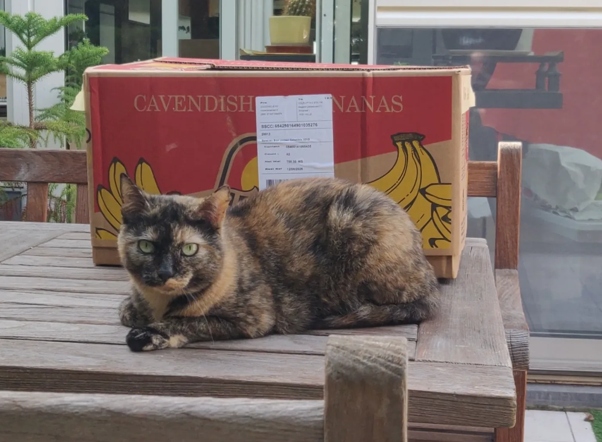
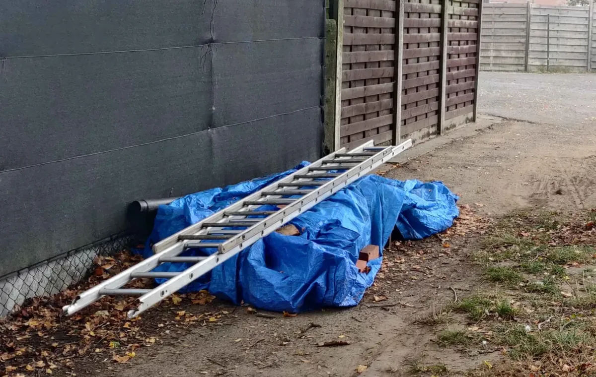
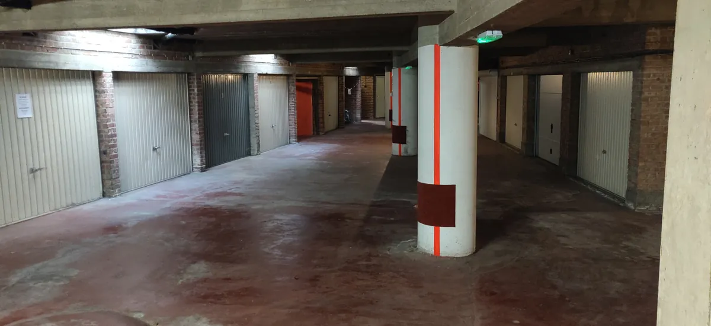
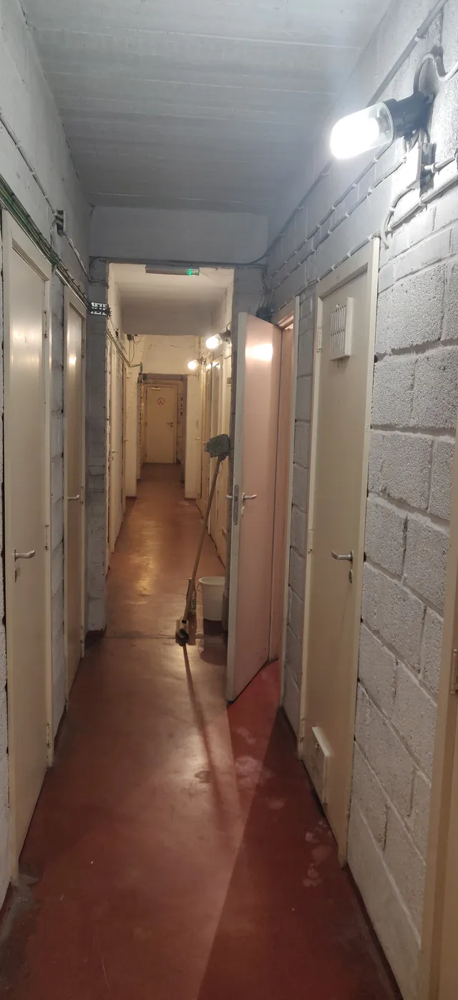
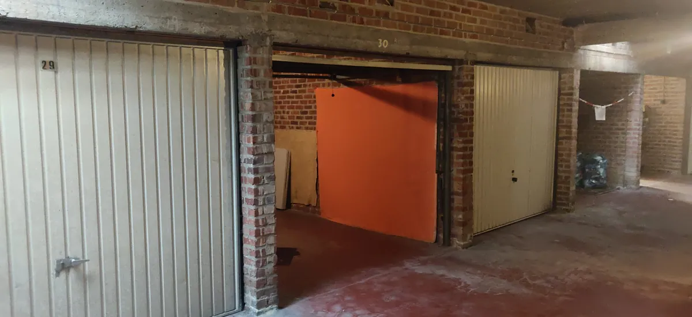
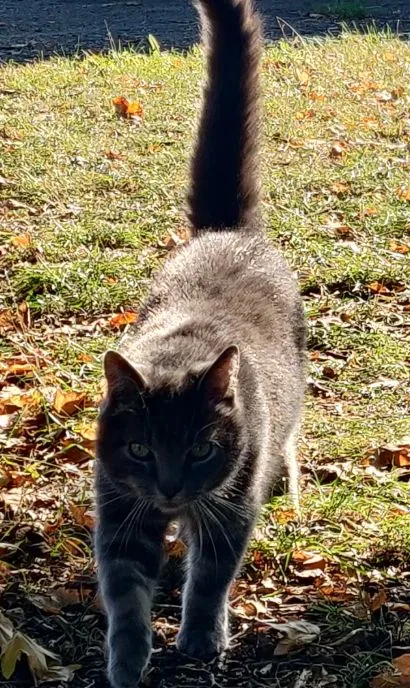

Grote Verhuis
Werkindeling voor de verhuis, plus de parkeerzones rond de rotonde van de Leopoldlaan in Dendermonde en de plaats van de verhuislift en de hoofdingang op verhuisdag.
Demontagewerken
- Keuken demonteren
- Bed demonteren
- Lampen demonteren
- Deuren uithalen
Kleine opruimwerken
- Alle losse materialen in bananendozen steken. Label elke doos met wat erin zit en uit welke ruimte (keuken, living, enz.).
- Grote bakken klaarzetten met de labels ‘lampen’ en ‘klein elektro’.
Buiten opruimen en stockeren

- Paletten buiten: wegnemen en stockeren. We hergebruiken ze in de garage om meubels op te plaatsen.
- Elektrische leidingbuizen: binnen in de garage stockeren, boven de parasol.
- PVC-pijpen: gaan naar het afval.
- Boertjes en zakken rijnzand: vrij mee te nemen. Buurman Marc moet er ook nog een paar krijgen.
De kelder en berging van L9 bereiken



Rechts van de lift is een wenteltrap. Trek daar aan de magnetisch gesloten kelderdeur en neem de trap naar beneden. Je komt uit op -1 waar onze berging en garage zich bevinden.
Verhuis grote stukken
Lees de plakkers op elk meubel. Wat erop staat, bepaalt waar het meubel naartoe gaat:
- → L9 SKR betekent: naar Leopoldlaan 9, slaapkamer rechts.
- → 137 betekent: naar garage 137.
- → houden en afplakken betekent: het meubel blijft in huis. Wikkel het in plastic en zet het uit de weg.
- ✕ WEG (een kruis met WEG) betekent: het meubel gaat naar spoor 2, of wordt gedemonteerd en weggesmeten. Gratis hout!
Afval / spoor 2
Sorteer het afval. Op het einde van de dag laden we het in de camionette van Christophe. Tijdens de week gaat die mee naar het containerpark.

🐈 Willem zegt: “Verhuisstress! Dat kan ik maar op een manier kwijt… sproedelen!”
Kaart en parkeerzones
Kaart © OpenStreetMap-bijdragers · open in Google Maps